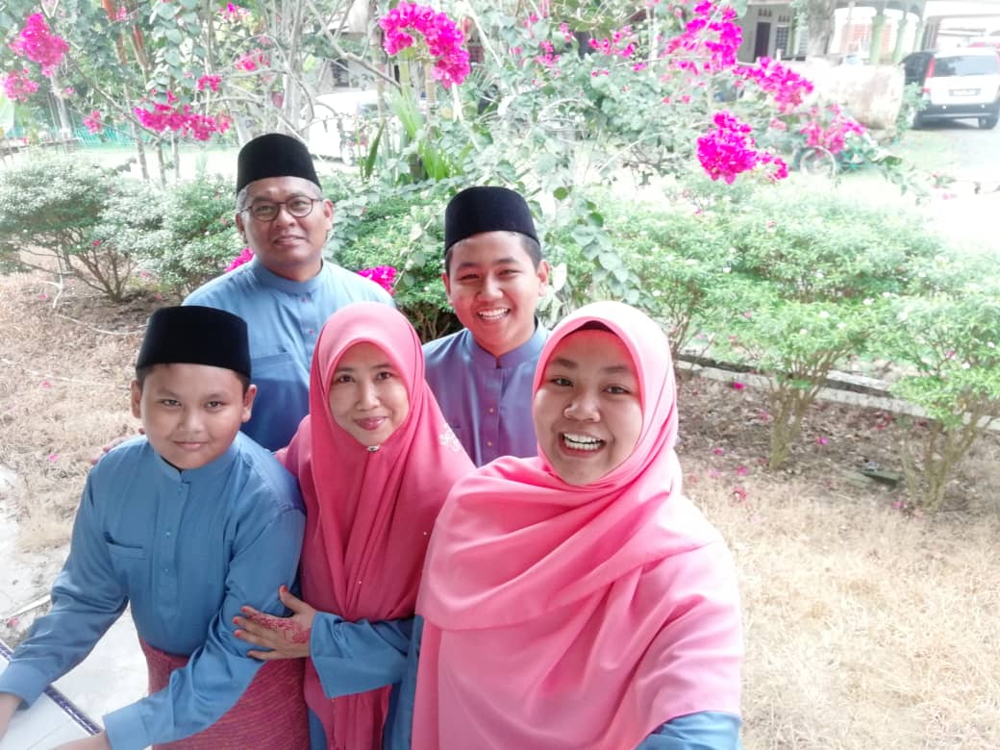
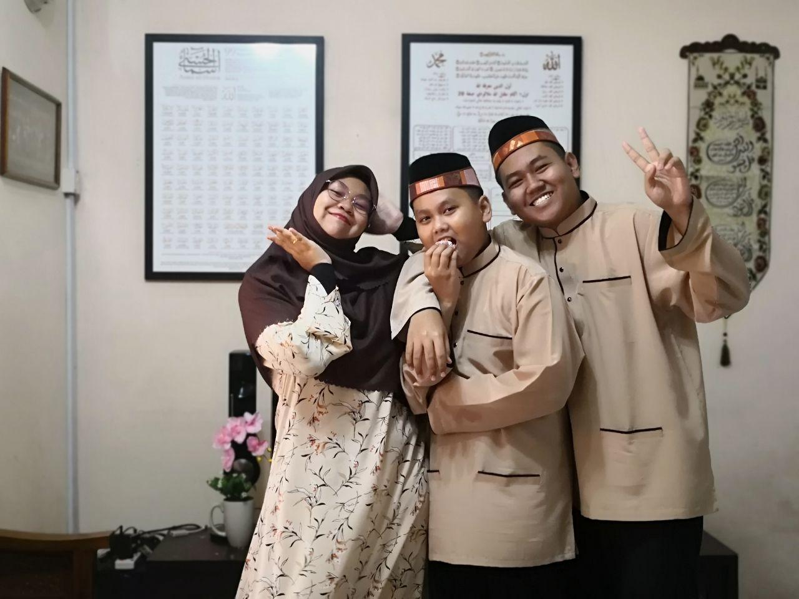

My Family

I am come from a family of five. Eventhough our family is small, but I believe that it will make us have a bigger space to pour our love to each other every single day. We love to travel together which has been a reason for me why I do not very fond to travel with my friends that often. We do not often travel to a place very far away from home except Sabah as we traveled there in 2017. Instead, we love to roam around Selangor or nearby states just to take some fresh air as we all busy with either works for my parents and studies for me and my siblings. Another activity that we will do together whenever everyone is home (because I often at hostel and collage), we will watch movies at cinema together. The common genre that we will choose is animation as we do not want heavy movies and just want to watch and relaxing. I do think that these habits bring as closer.

This is my parents. My father, Mohd Nazri Bin Mustafa and my mother, Siti Marina Binti Mohd Tohid met during their studies in Liverpool, United Kingdom back in 1997-1998 as they went into the same university but studied different programs. Now, my father works as engineer of electric and electronic at MIMOS because he has degree in Electric and Electronic Engineering and master degree from faculty of science and computer. As for my mother, she currently teaches Biology at KISAS align with the degree in Microbiology she has. For me, I feel proud of them for whatever they do because they are my forever stars.

These two are my younger brothers. From right, his name is Ahmad Muhaimin who is 17 years old this year. Meanwhile, the one in the middle is the youngest in our siblings whose name is Ahmad Firas Iqbal, 12 years old. Being one and only daughter and sister, I often see my brothers as naughty and rebellious. But, little did I know that all boys are like that. Eventhough I do not have other sisters or big brothers, I feel enough and complete with these boys as they are nice to me. No doubt, I love my family for whoever they are.